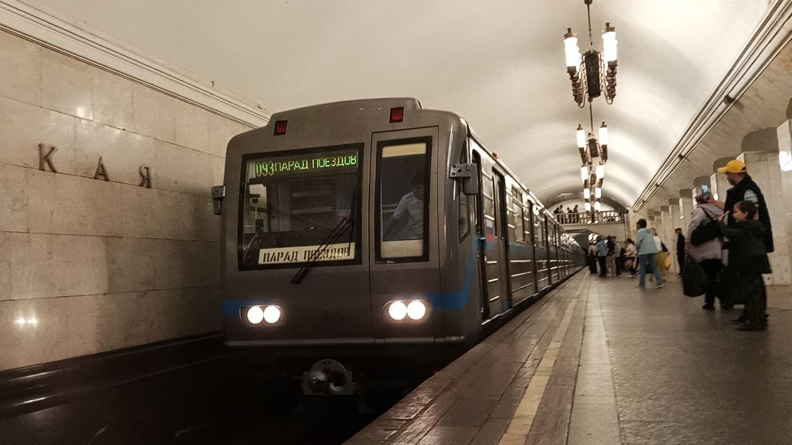

81-717.6/714.6
Модификация электровагонов метрополитена серии 81-717.5/714.5. Неофициально именуется «точка шесть». Выпускалась на заводе «Метровагонмаш» (г. Мытищи) с 2009 по 2021 год (плюс опытный КВР в 2007-м).
Изначально разрабатывалась как программа капитально-восстановительного ремонта (КВР) для старых вагонов (литера «К»), но позже было налажено производство абсолютно новых составов. Всего было построено 26 составов (158 вагонов), которые разошлись по четырём метрополитенам России.
Общая информация
| Параметр | Значение |
|---|---|
| Производитель | Трансмашхолдинг (ОАО «Метровагонмаш») |
| Годы постройки | 2007 (опытный .6К) 2009, 2011–2014, 2017, 2019–2021 (серийные .6) |
| Тип ТЭД | Коллекторные |
| Система тяги | Реостатно-контакторная (РКСУ) |
| Длина вагона | 19 206 мм |
| Ширина | 2670 мм |
| Высота | 3650 мм |
| Количество дверей | 2×4 |
Конструкция и особенности
🚅 Кабина машиниста
Установлена новая просторная полуобтекаемая стеклопластиковая кабина с аварийной дверью в лобовой части. Пульт управления позаимствован у поездов «Ока» и «Ладога». В кабине установлен кондиционер.
🌬️ Вентиляция и климат
Приточно-вытяжная вентиляция салона заменена на принудительную. В потолочной зоне установлены новые светильники и круглые вентиляторы.
🛋️ Пассажирский салон
Применена новая облицовка стен и сидений. В отличие от старых номерных, здесь больше пластика и современные материалы отделки.
🔧 Электрооборудование и тележки
Установлен новый комплект электрооборудования и тележки обновлённой конструкции. Начиная со второго серийного состава, вагоны оборудованы электроприводом дверей.
Проблемы и отказ от закупок
Несмотря на модернизацию, в ходе эксплуатации первых серийных составов на Калининской линии были выявлены многочисленные технические проблемы. Поезда часто отсутствовали на линии из-за поломок.
В результате Московский метрополитен принял решение отказаться от дальнейших закупок 81-717.6/714.6 в пользу принципиально новых составов 81-760/761 «Ока». Вагоны «точки шесть» были переданы на Люблинско-Дмитровскую линию, где успешно работают до сих пор.
Опытный модернизированный состав 81-717.6К/714.6К, с которого всё начиналось, в феврале 2024 года был утилизирован в электродепо ТЧ-16 «Митино».
История модели
Первый опытный КВР
В декабре в ТЧ-2 «Сокол» поступили первые три вагона (81-717.6К/714.6К), в январе 2008 года состав был дополнен до 8 вагонов.
Выход серийного состава
Первый абсолютно новый поезд 81-717.6/714.6 (без литеры «К») вышел на Калининскую линию.
Перевод на ЛДЛ
Из-за частых поломок составы переданы на Люблинско-Дмитровскую линию в депо ТЧ-15 «Печатники».
Поставки в регионы
Составы начали закупать другие города: Нижний Новгород (2012), Екатеринбург (2019), Самара (2020).
Утилизация опытного образца
Первый состав 81-717.6К/714.6К утилизирован в ТЧ-16 «Митино».
Эксплуатация в городах
| Город (Депо) | Головные (81-717.6) | Промежуточные (81-714.6) |
|---|---|---|
| Москва (ТЧ-15 «Печатники») | 20 / 20 | 65 / 63 |
| Нижний Новгород (ТЧ-1 «Пролетарское») | 22 / 22 | 28 / 28 |
| Екатеринбург (ТЧ-1 «Калиновское») | 4 / 4 | 4 / 4 |
| Самара (ТЧ-1 «Кировское») | 2 / 2 | 2 / 2 |
Известные именные и уникальные вагоны
- 27001-27002 — первый серийный (Москва)
- 27015-27016 — фиолетовый (Москва)
- 27035-27036 — именной «Стрелка» (Нижний Новгород)
- 27043-27044 — именной «Максим Горький» (Нижний Новгород)
Вагоны-доноры запчастей (Москва)
- 20019 — отставлен 04.04.2016
- 20021 — отставлен 15.12.2017
- 20047 — отставлен 06.11.2015
- 27004 — отставлен 01.11.2018
Фотогалерея

📌 Станция «Курская».
Общий вид состава.
Нажмите на фото для увеличения
«81-717.6/714.6 стала попыткой продлить жизнь легендарной серии номерных вагонов, совместив старый кузов с современным салоном и электроникой. Несмотря на сложную судьбу, "точка шесть" стала важным этапом в истории московского метростроения».